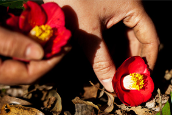
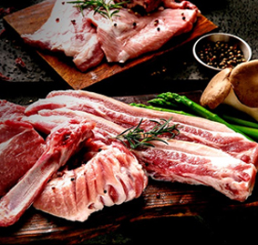

Publications

2020 제주 투자정보
(Gangwon Investment...
2020.06.18Promotional Videos

제주도에는 제주도가 참 많다
Zone Investment Promoti...
2020.06.18Jeju Life
-
Leisure IndustryFrom Hallasan Mountain to the Ocean, from Observation to Experience.How Jeju’s Leisure Industry Captivated Tourists from Korea and Beyond.
-
 Subtropical Crops Industry Part 2Bring minds together to let the light shine. Gongsimchae Agricultural Company: A social enterprise and a tropical and subtropical farmIn Korea, there are 330,000 multicultural households, which account for 1.6% of the total number of Korean households. The total number of multicultural household members stands at around a million. The cultural diversification of Korean society has been driving the consumption of tropical and subtropical fruits in the country. However, Korea still has many hurdles to overcome, such as racism and human rights issues experienced by migrant women. Today, a Jeju company is innovating the food industry by working with migrant women in Jeju. The name of the company is Gongsimchae Agricultural Company, which is the Korean word for morning glory (kong xin cai). In Korean, the name means “bring the minds together to let the light shine.” The company produces, distributes, and processes subtropical vegetables, and it runs various activity programs involving the crops. The company’s goal is to become no. 1 in the Korean agricultural sector.
Subtropical Crops Industry Part 2Bring minds together to let the light shine. Gongsimchae Agricultural Company: A social enterprise and a tropical and subtropical farmIn Korea, there are 330,000 multicultural households, which account for 1.6% of the total number of Korean households. The total number of multicultural household members stands at around a million. The cultural diversification of Korean society has been driving the consumption of tropical and subtropical fruits in the country. However, Korea still has many hurdles to overcome, such as racism and human rights issues experienced by migrant women. Today, a Jeju company is innovating the food industry by working with migrant women in Jeju. The name of the company is Gongsimchae Agricultural Company, which is the Korean word for morning glory (kong xin cai). In Korean, the name means “bring the minds together to let the light shine.” The company produces, distributes, and processes subtropical vegetables, and it runs various activity programs involving the crops. The company’s goal is to become no. 1 in the Korean agricultural sector.
-
 Subtropical Crops Industry Part 1Turning a Crisis into an Opportunity How Jeju will Lead the Food Industry with Its Tropical and Subtropical CropsWell-grown olives hang from trees, basking in the sunlight on an open field. Banana trees, each measuring at least 2 m in height, nurture their fruit into full growth. Apple mangoes and papayas wait for the harvest.
Subtropical Crops Industry Part 1Turning a Crisis into an Opportunity How Jeju will Lead the Food Industry with Its Tropical and Subtropical CropsWell-grown olives hang from trees, basking in the sunlight on an open field. Banana trees, each measuring at least 2 m in height, nurture their fruit into full growth. Apple mangoes and papayas wait for the harvest. -
Cosmetics Ingredient Industry Part 1Beauty industry emerges as a driving force of the futureNew Functions of Jeju Species Discovered, Cosmetics Ingredients from Jeju
-
Pork IndustryThe pork industry is a primary industry conducive to value-adding initiatives. It can branch out as a secondary or a third industry.The government provides full support for the improvement of production technologies and the facilitation of pork distribution. As part of its convergent information and communication technology (ICT) efforts, the government is currently developing a system capable of adjusting animal density, disposing wastes, and managing growth environments to maintain the appropriate number of livestock. The government also plans to build an animal waste transfer system to foster a sustainable pork industry that grows with the local communities.
-
 Renewable Energy Industry Part 2
Renewable Energy Industry Part 2
-
 Renewable Energy Industry Part 1A leap forward to becoming a global hub for world-class green industries. Our Journey Towards Carbon-Free Island JejuIndustrialization has made the lives of human beings more prosperous, but along with it has come environmental degradation and the depletion of resources. Whenever natural disasters driven by extreme weather have occurred, people have said that the Earth was sick.
Renewable Energy Industry Part 1A leap forward to becoming a global hub for world-class green industries. Our Journey Towards Carbon-Free Island JejuIndustrialization has made the lives of human beings more prosperous, but along with it has come environmental degradation and the depletion of resources. Whenever natural disasters driven by extreme weather have occurred, people have said that the Earth was sick. -
 Cosmetics Ingredient Industry Part 2Beauty industry emerges as a driving force of the future
Cosmetics Ingredient Industry Part 2Beauty industry emerges as a driving force of the future